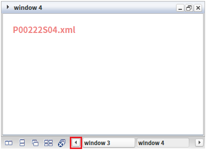
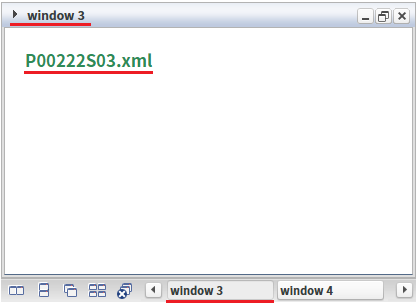
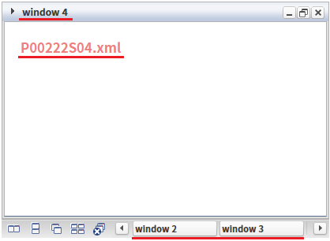
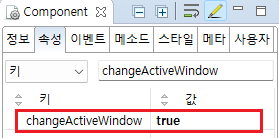

WindowContainer의 'changeActiveWindow' 속성을 'true'로 설정하여 네임 레이어 영역의 스크롤 이동 버튼이 네임 레이어 선택 기능으로 작동되도록 설정된 예제입니다.
이 속성의 설정 값에 따른 동작은 다음과 같습니다.
false: [default] 스크롤 좌우 버튼을 클릭하면 네임 레이어 영역의 가로 스크롤이 이동됩니다.
true: 스크롤 좌우 버튼을 클릭하면 선택된 네임 레이어를 기준으로 좌우 네임 레이어가 선택되는 기능으로 동작합니다.
'changeActiveWindow' 속성을 'true'로 설정
'changeActiveWindow' 속성을 'false'로 설정
네임 레이어 영역은 스크롤이 표시되지 않습니다. 영역의 좌우에 배치된 버튼을 클릭하여 화면에 보여지는 영역을 이동하게 합니다.
예제 영역 'changeActiveWindow: true'에서 테스트합니다.1
STEP 1: 네임 레이어 스크롤 왼쪽 이동 버튼을 클릭합니다.
컴포넌트 하단에 위치한 네임 레이어 영역의 왼쪽에 위치한 스크롤 버튼을 클릭합니다.
Image 1.브라우저(Chrome) 실행 예시

2
STEP 2: 실행 결과를 확인합니다.
네임 레이어 영역이 왼쪽으로 이동되고, 왼쪽에 위치한 'window 3' 네임 레이어가 선택됩니다. 네임 레이어에 해당하는 윈도우가 화면에 표시됩니다.
Image 2.브라우저(Chrome) 실행 예시

예제 영역 '(기본 설정) changeActiveWindow: false'에서 테스트합니다.1
STEP 1: 네임 레이어 스크롤 왼쪽 이동 버튼을 클릭합니다.
컴포넌트 하단에 위치한 네임 레이어 영역의 왼쪽에 위치한 스크롤 버튼을 클릭합니다.
Image 3.브라우저(Chrome) 실행 예시
2
STEP 2: 실행 결과를 확인합니다.
네임 레이어 영역이 왼쪽으로 이동됩니다. 선택된 네임 레이어는 변경되지 않습니다.
Image 4.브라우저(Chrome) 실행 예시

1
WindowContainer 속성을 설정합니다.
[필수] changeActiveWindow="true"
(옵션 설명)
- false: [default] 스크롤 좌우 버튼을 클릭하면 네임 레이어 영역의 가로 스크롤이 이동됩니다.
- true: 스크롤 좌우 버튼을 클릭하면 선택된 네임 레이어를 기준으로 좌우 네임 레이어가 선택되는 기능으로 동작합니다.
Image 5.웹스퀘어 스튜디오의 Component View 예시

Example 1.Source
<!-- windowContainer 의 소스 본문 예시 --> <w2:windowContainer changeActiveWindow="true"> <!-- 중략 --> </w2:windowContainer>
changeActiveWindow